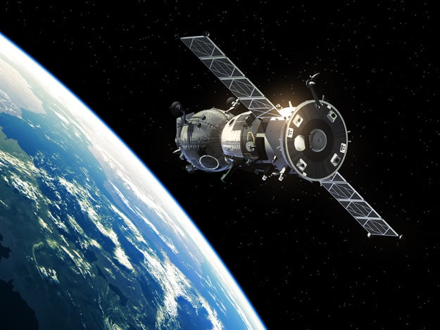

Primeiro satélite feito no Brasil será lançado dia 28 de fevereiro
Postado: 10 Fevereiro 2021

No final deste mês, irá ao espaço o primeiro satélite de observação e monitoramento da Terra inteiramente projetado, integrado, testado e operado pelo Brasil. O satélite Amazônia 1 foi desenvolvido pelo Instituto Nacional de Pesquisas Espaciais (INPE)
em parceria com a Agência Espacial Brasileira (AEB). O lançamento ocorrerá à 1h54 do dia 28 de fevereiro (horário de Brasília) na missão PSLV-C51 da agência espacial indiana Indian Space Research Organisation (ISRO). O satélite faz
parte da chamada Missão Amazônia, criada para fornecer dados de sensoriamento para observar e monitorar o desmatamento. As etapas de montagem, integração e testes do Amazônia 1, que também irá monitorar a agricultura em todo o país,
foram realizadas no Laboratório de Integração e Testes do INPE, em São José dos Campos (SP). Depois disso, os módulos do satélite foram separados, acondicionados em contêineres e transportados para a base de Sriharikota, onde ocorrerá
o lançamento.
Ler Mais
Clubhouse: exclusiva, rede social poderá ter serviços de assinatura
Postado: 08 Fevereiro 2021
Na última segunda-feira (1), Paul Davison, o CEO da rede social do momento, Clubhouse, comentou em entrevista ao site CNBC seus planos para o futuro da plataforma. Segundo ele, há planos para a inserção de uma plataforma de assinaturas mensais que beneficie
seus usuários, de maneira similar ao sites que possibilitam a colaboração coletiva — também conhecidos como serviços de crowdfunding — em prol de criadores, como o Patreon. Davison explica que espera retribuir economicamente usuários
que promovem conteúdo e entretenimento de maneira inteligente em sua plataforma: "queremos permitir que ganhem a vida diretamente no Clubhouse por meio de coisas como assinaturas e eventos com ingressos, recebendo doações de ouvintes
que ficarão felizes em pagá-los diretamente pelas experiências que estão criando para eles," comentou ele em outra entrevista ao Squawk Box. A ideia pode funcionar muito bem, já que até o momento o Clubhouse é totalmente gratuito,
livre de propagandas e assinaturas premium. Contudo, a plataforma exige que seus usuários sejam convidados por membros ativos, o que acaba tanto limitando o acesso quanto sendo um fator de exclusividade. A presença de figuras conhecidas,
como Elon Musk, contribui para a popularização da rede social.
Ler Mais